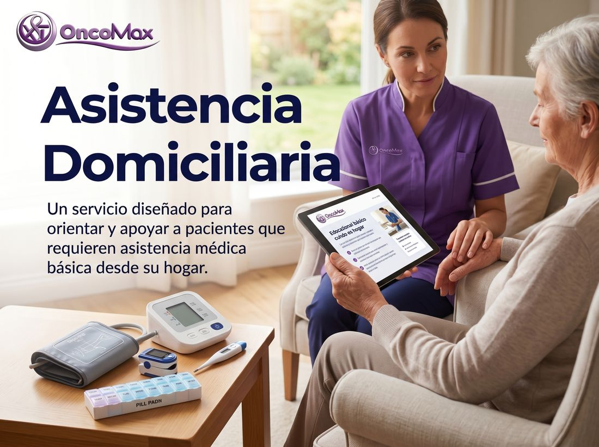

Para el paciente
No tienes que vivir cada paso en soledad. Pedir apoyo también es cuidarte.
Acompañar
Un espacio con mensajes sencillos para pacientes, familiares y amigos.

01 Mensajes
Para el paciente
No tienes que vivir cada paso en soledad. Pedir apoyo también es cuidarte.
Para la familia
Escuchar con calma puede ser una ayuda muy valiosa durante el tratamiento.
Para los amigos
Una llamada, una visita o un mensaje breve pueden acompañar mucho.
Para quien cuida
Acompañar cansa. Cuidarte a ti también es cuidar al paciente.
Qué decir
A veces no hacen falta frases perfectas, sino presencia.
La vida sigue
Mantener rutinas y gustos personales también forma parte del cuidado.
02 Guía rápida
Permite que la persona exprese cómo se siente sin obligarla a responder.
Por ejemplo, acompañar a una cita o ayudar con una tarea cotidiana.
Cada persona enfrenta el proceso de una manera distinta.
Puedes ayudar a anotar preguntas y recordar las indicaciones del profesional.
Quien acompaña necesita descansar, conversar y pedir ayuda cuando se siente cansado.
El equipo de OncoMax también atiende a familiares y personas cuidadoras.